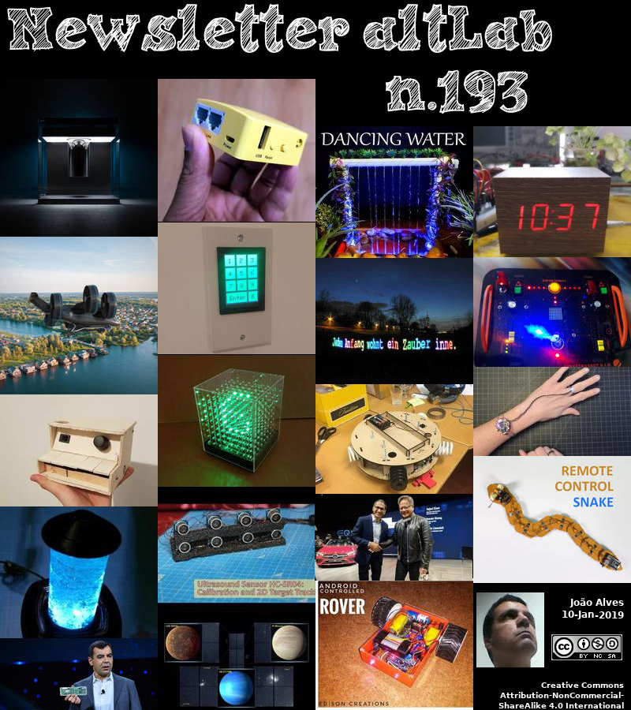

2019-01-10 - Nº 193


Editorial
Esta é a Newsletter Nº 193 que se apresenta com o mesmo formato que as anteriores. Se gostar da Newsletter partilhe-a!
Todas as Newsletters encontram-se indexadas no link.
Esta Newsletter tem os seguintes tópicos:
Faz hoje anos que nascia, em 1911, Norman Heatley. Este bioquímico inglês resolveu os problemas na extracção da penicilina do seu molde, e abriu o caminho para a sua produção em massa. No Dia D da Segunda Guerra Mundial, os Aliados tinham um stock adequado para tratar os feridos em perigo de infecções bacterianas graves. Embora tenha sido Fleming quem acidentalmente descobriu a penicilina (1928), foi Heatley quem a tornou prática, fazendo quantidades suficientes em 1941 para os seus primeiros testes clínicos. Seu aparato incluía "bacias" de porcelana, batedeiras de leite e bandejas de assar para cultivar as bactérias. Além disso, um método de ensaio que ele desenvolveu poderia medir com precisão a actividade de uma amostra de penicilina, no que ficou conhecido como "unidades de Oxford". O seu método de produção usava pratos de tortas, latas de biscoitos e um recipiente de porcelana apelidado de comadre.
Faz também hoje anos que nascia, em 1936, Robert Woodrow Wilson. Este rádio-astrónomo norte-americano partilhou com seu colega de trabalho Arno Penzias o Prémio Nobel de Física de 1978 pela descoberta da radiação cósmica de fundo em micro-ondas usando uma antena de chifre de micro-ondas nos Laboratórios Bell, Holmdel, Nova Jersey. A sua descoberta em 1964 é agora amplamente interpretada como sendo a radiação remanescente do modelo “Big Bang” para a criação do universo há vários biliões de anos atrás. Wilson continuou o seu trabalho de astrofísica com Penzias, procurando por moléculas interestelares e determinando a abundância relativa de isótopos interestelares.
Por fim, faz anos hoje que nascia, em 1938, Donald Knuth. Este matemático e cientista da computação ficou conhecido por ter criado o sistema de composição de texto TeX, da linguagem de definição de fontes METAFONT relacionada e do sistema de renderização, e da família de fontes modernas Computer Modern. É também conhecido por ter criado a "bíblia" dos programadores - o TAOCP - The Art of Computer Programming. Na década de 1970, Knuth descreveu a ciência da computação como "um campo totalmente novo, sem identidade real. E o padrão de publicações disponíveis não era assim tão alto. Muitos dos trabalhos publicados estavam simplesmente errados ... Então, uma das minhas motivações foi para endireitar uma história que foi muito mal contada. ". Em 2011, os três primeiros volumes e a primeira parte do volume quatro de sua série foram publicados.
Nesta semana que passou está a decorrer a CES 2019. Esta feira que decorre entre os dias 8 e 11 de Janeiro em Las Vegas e tem cerca de 4500 expositores é marcada habitualmente por lançamento de produtos por parte dos fabricantes de tecnologia e este ano não foi excepção. Uma das noticias que destaco é a apresentação por parte da Hyundai do seu veiculo prototipo de resposta a catástrofes naturais. O conceito Elevate é baseado numa plataforma EV modular com a capacidade de alternar diferentes corpos para situações específicas. A arquitectura da perna robótica tem cinco graus de liberdade, além de motores de propulsão e é habilitada pelo mais recente em tecnologia de actuadores eléctricos. Este projecto é exclusivamente capaz de andar com os passos dos mamíferos e repteis, permitindo que ele se mova em qualquer direcção. Outra noticia desta semana, também vinda da CES 2019 é a apresentação por parte da IBM do primeiro sistema de computação quântica integrado para uso comercial. O IBM Q System One foi projectado para lidar um dia com problemas que actualmente são considerados de natureza muito complexa e exponencial para os sistemas clássicos. Aplicações futuras da computação quântica podem incluir encontrar novas maneiras de modelar dados financeiros e isolar os principais factores de risco globais para fazer melhores investimentos, ou encontrar o melhor caminho entre os sistemas globais para logística ultra-eficiente e optimizar as operações de frota para entregas.
Na Newsletter desta semana apresentamos diversos projetos de maker assim como alguns modelos 3D que poderão ser úteis.
 João Alves ([email protected])
João Alves ([email protected])
O conteúdo da Newsletter encontra-se sob a licença  Creative Commons Attribution-NonCommercial-ShareAlike 4.0 International License.
Creative Commons Attribution-NonCommercial-ShareAlike 4.0 International License.
Novidades da Semana
Hyundai Walking Car Concept is the Future of the First Responder Industry
"Any first responder will tell you that the first 72 hours following a natural disaster are the most crucial to saving lives. However, often times duetothe nature of the disaster (forest fire, earthquake,hurricane,or flood), it can be difficult for search-and-rescue and humanitarian aid missions to reach and get immediate help to those in need. The need for efficient, rapid, resilient transportation for disaster assistance is what led Hyundai to develop the first-ever vehicle with moveable legs. Elevate is the first Ultimate Mobility Vehicle (UMV), blending technology found in electric cars and robots, which allowsit to traverse terrain beyond the limitations of even the most capable off-road vehicle. “When a tsunami or earthquakehits, current rescue vehicles can only deliver first responders to the edge of the debris field. They have to go the rest of the way by foot." [...]
IBM Unveils World's First Integrated Quantum Computing System for Commercial Use
"At the 2019 Consumer Electronics Show (CES), IBM (NYSE: IBM) today unveiled IBM Q System One™, the world's first integrated universal approximate quantum computing system designed for scientific and commercial use. IBM also announced plans to open its first IBM Q Quantum Computation Center for commercial clients in Poughkeepsie, New York in 2019. IBM Q systems are designed to one day tackle problems that are currently seen as too complex and exponential in nature for classical systems to handle. Future applications of quantum computing may include finding new ways to model financial data and isolating key global risk factors to make better investments, or finding the optimal path across global systems for ultra-efficient logistics and optimizing fleet operations for deliveries. Designed by IBM scientists, systems engineers and industrial designers, IBM Q System One has a sophisticated, modular and compact design optimized for stability, reliability and continuous commercial use. For the first time ever, IBM Q System One enables universal approximate superconducting quantum computers to operate beyond the confines of the research lab." [...]
Outras Notícias
Mbed OS 5.11.1 released
"We are pleased to announce the Mbed OS 5.11.1 release is now available. This is the latest patch release based on the feature set that Mbed OS 5.11 introduces. Summary In this release we have added support for GD32F307VG, TT_M3HQ, Seeed Arch MAX, ACONNO ACN52832, NUCLEO_L4R5ZI_P and the KW41Z side of RapidIoT. We have added fixes for the following reported issues: 8714 STM32L4 - using TICKLESS and serial (UART - AT cellular) losing characters 8864 TRNG on L4 pulls rug out from USB 5348 K64F: LowPowerTimeout: Inaccurate delay after board power up 8880 CordioGattServer is using wrong connection handles resulting in faults / memory corruption 8555 NVSTORE test issue 7398 UART not working on LPC54608 8913 Build of NUCLEO_F030R8 fails when DEVICE_SERIAL=0 8992 Support for Cortex-M33FD 8710 Build failure for FUTURE_SEQUANA_M0 with PSOC6_DYNSRM_DISABLE=1 8864 TRNG on L4 pulls rug out from USB 8950 Properly fix Travis CI Rabbit MQ issue 9014 ATHandler.cpp - Bad logical comparison 8785 NvStore does not correctly persist values through reset 8870 Feature: QSPI support on DISCO_F769NI 8124 RTL8195AM netsocket test failures 8870 Feature: QSPI support on DISCO_F769NI 8664 equeue cancel function can corrupt internal data structures, causing queue failure 9099 Identically names structs in different files 9176 STM32: RTC No Longer Enabled by Reading the Time Support has been added for: nrf52_dk bootloader DAC (analog-out) HAL on NUMAKER_PFM_NANO130, NUMAKER_PFM_M453, NUMAKER_PFM_M487/NUMAKER_IOT_M487 and NUMAKER_PFM_M2351 TICKLESS for STM32 targets which are using LPTIM feature for LPTICKER We have updated mbed-coap to version 4.7.3. There are also a number of other fixes and code improvements. For full details of this and previous releases, please visit our releases page." [...]
Citizen Scientists Find New World with NASA Telescope
"Using data from NASA's Kepler space telescope, citizen scientists have discovered a planet roughly twice the size of Earth located within its star's habitable zone, the range of orbital distances where liquid water may exist on the planet's surface. The new world, known as K2-288Bb, could be rocky or could be a gas-rich planet similar to Neptune. Its size is rare among exoplanets - planets beyond our solar system. "It's a very exciting discovery due to how it was found, its temperate orbit and because planets of this size seem to be relatively uncommon," said Adina Feinstein, a University of Chicago graduate student who discussed the discovery on Monday, Jan. 7, at the 233rd meeting of the American Astronomical Society in Seattle. She is also the lead author of a paper describing the new planet accepted for publication by The Astronomical Journal. Located 226 light-years away in the constellation Taurus, the planet lies in a stellar system known as K2-288, which contains a pair of dim, cool M-type stars separated by about 5.1 billion miles (8.2 billion kilometers) - roughly six times the distance between Saturn and the Sun." [...]
Polaroid unveils brand-new 3D printer for the UK and Europe at CES 2019
"Iconic imaging and technology brand, Polaroid, is unveiling the brand-new Polaroid PlaySmart 3D printer at CES 2019 for the UK and European markets. The Polaroid PlaySmart is an affordable, lightweight, desktop 3D printer with Wi-Fi print technology, via a user-friendly mobile app, that will fit easily into any home, classroom or office environment. Key features of the Polaroid PlaySmart 3D printer: 120 x 120 x 120mm print size 5-inch LCD touch screen, with step-by-step instructions to aid in your model creations Layer height ranging from 50 to 300 microns 1Kg Polaroid universal PLA filament included at no extra cost (RRP €31.95) One-click instant print via models stored in the printer memory 200 MP camera for live monitoring from wherever you are Quick-release and quick-replace 0.4mm nozzle Compatible with the Polaroid universal filament range including PLA, ABS, PETG and more Print via SD card, USB, mobile app & Wi-Fi 360° fan duct to instantly cool your filament Aluminium-magnesium alloy heated print bed 2GB ROM for model storage and video playback (video automatically recorded of every print) Also included at no extra cost, the Polaroid precise filament holder & scale, allowing you to know exactly how much filament you have left on your reel at any time (€26.95) Lightweight at just 5KG Elegantly designed and user-friendly, the Polaroid PlaySmart 3D printer’s software allows users to easily download and import models (including pre-existing designs available for free) and print them with just two clicks of a button. The Polaroid SmartPrep software platform enables the effortless preparation, editing and printing of multi-coloured models. Simply import and edit .stl files (with thousands of pre-existing designs already available for free), and then it’s as simple as two clicks to print! For more experienced users, the advanced settings allow you to make optional changes to the way your model prints." [...]
BELL unveils full-scale design of air Taxi at CES 2019
"Bell Helicopter, a Textron Inc. (NYSE: TXT) company, revealed the configuration and full-scale vertical-takeoff-and-landing (VTOL) air taxi vehicle today during CES 2019. The air taxi, named Bell Nexus, is powered by a hybrid-electric propulsion system and features Bell’s signature powered lift concept incorporating six tilting ducted fans that are designed to safely and efficiently redefine air travel. BELL NEXUS As space at the ground level becomes limited, we must solve transportation challenges in the vertical dimension – and that’s where Bell’s on-demand mobility vision takes hold. The industry has anticipated the reveal of our air taxi for some time, so Bell is very proud of this moment. We believe the design, taken with our strategic approach to build this infrastructure, will lead to the successful deployment of the Bell Nexus to the world. Mitch Snyder, president and CEO, Bell Bell Nexus means the nexus of transport and technology and of comfort and convenience." [...]
Toshiba Announces 16TB MG08 Series Hard Disk Drives
"Industry’s largest capacity 16TB hard disk drives deliver new level of storage density and improved power efficiency. Toshiba Electronic Devices & Storage Corporation (“Toshiba”) announces MG08 Series, the industry’s largest capacity 16TB[1] [2] Conventional Magnetic Recording (CMR) HDD. With 33% more capacity than today’s widely adopted 12TB drives, and 14% more capacity than prior 14TB models, MG08 16TB drives are compatible with the widest range of applications and operating systems, and adapted to mixed random and sequential read and write workloads in both cloud and traditional datacenter environments. The MG08 Series is Toshiba’s second-generation helium-sealed HDD family, and eighth-generation Enterprise Capacity HDD family. Toshiba has delivered its industry-leading 16TB capacity and improved power efficiency by utilizing the 9-disk helium design, introduced last year in 14TB models, and its own advanced precision laser welding process to ensure the helium remains sealed inside the drive case. The MG08 features 7,200rpm performance, a 550TB per year workload rating[3], a 2.5 million-hour MTTF[4], a 512Mib cache buffer[5], and a choice of SATA and SAS interfaces—all in an industry-standard, 3.5-inch[6] form factor." [...]
Using Autonomous Vehicle Technology to Make Roads Safer Today
"Technologies Developed for Fully Autonomous Vehicles Can Improve the Advanced Driver Assistance Systems Already in Wide Use Safety has always been our North Star. We view it as a moral imperative to pursue a future with autonomous vehicles (AV), but to not wait for it when we have the technology to help save more lives today. We fundamentally also believe that everything we do must scale, and we constantly search for the best ways to match our technology to market needs. Founded on the idea that we could use computer vision technology to help save lives on the road, Mobileye became a pioneer in advanced driver assistance systems (ADAS). These capabilities are now scaling up to become the building blocks for a fully autonomous vehicle. The same is also true in reverse." [...]
NASA's TESS Rounds Up its First Planets, Snares Far-flung Supernovae
"NASA’s Transiting Exoplanet Survey Satellite (TESS) has found three confirmed exoplanets, or worlds beyond our solar system, in its first three months of observations. The mission’s sensitive cameras also captured 100 short-lived changes — most of them likely stellar outbursts — in the same region of the sky. They include six supernova explosions whose brightening light was recorded by TESS even before the outbursts were discovered by ground-based telescopes. The new discoveries show that TESS is delivering on its goal of discovering planets around nearby bright stars. Using ground-based telescopes, astronomers are now conducting follow-up observations on more than 280 TESS exoplanet candidates. The first confirmed discovery is a world called Pi Mensae c about twice Earth’s size." [...]
HTC Vive Pro Eye, NVIDIA RTX and ZeroLight Push State of the Art in VR at CES
"Whether you’re building a sleek virtual car buying experience or just want to unwind by taking a few swings of the bat, you’ll want to check out the new HTC Vive Pro Eye headset. Demonstrating VR’s enormous potential for professional applications and games, HTC VIVE is showing off the eye-tracking capabilities of their new headset powered by NVIDIA RTX GPUs at CES in Las Vegas at the Wynn hotel’s Alsace room. Visitors to HTC’s booth can experience eye-tracking on the show floor for themselves with ZeroLight virtual auto showroom software and MLB Home Run Derby VR. These demos not only make VR’s potential for creative professionals and gamers clear, it’s yet another demonstration of how NVIDIA GPUs are propelling VR forward. Eye tracking combined with a technique called foveated rendering can be used to craft more lifelike VR experiences. The Vive Pro Eye takes advantage of foveated rendering through NVIDIA’s VRWorks Variable Rate Shading (VRS) to tailor the quality of a rendered image to where the user eyes are focused." [...]
Mercedes-Benz, NVIDIA to Create New AI Architecture for Mercedes Vehicles
"NVIDIA’s Jensen Huang, Mercedes’ Sajjad Khan unveil vision for software-defined AI cars integrating self-driving, intelligent cockpits. Mercedes-Benz announced today it has selected NVIDIA to help realize its vision for next-generation vehicles. Speaking to a packed crowd at the Mercedes-Benz booth on the first day of CES 2019, Mercedes-Benz Executive Vice President Sajjad Khan and NVIDIA founder and CEO Jensen Huang outlined their plans for next-gen AI cars and the new breed of mobility solutions they’ll enable. “We’re announcing a new partnership going forward, creating a computer that defines the future of autonomous vehicles, the future of AI and the future of mobility,” Huang said. He described a single system providing self-driving capabilities and smart-cockpit functions that replaces dozens of smaller processors inside current cars. Both companies, he said, agree that the car of the future must be software defined — starting from creating the software for today’s requirements, anticipating software for tomorrow’s needs and building the computing architecture to enable it." [...]
Ciência e Tecnologia
Building a sustainable future, one brick at a time
"An international team of scientists, led by King's College London, have developed a thermogalvanic brick that generates electricity as long as the two faces of the brick are at different temperatures. This is due to balanced ‘electrochemical’ reduction and oxidation processes occurring inside the brick at the two faces. As long as electrodes at these faces are at different temperatures, the electrochemical reactions occur and electricity is generated. The compounds inside are not consumed, do not run out and can never be overcharged. As long as there is a temperature difference there can be electricity. For example, if a house or shelter’s outside wall is sunny and hot, but the interior shaded and cool, electricity can be produced by the wall." [...]
Electronic tattoos for wearable computing
"These stretchable, inexpensive, tattoo-like circuits are made with an inkjet printer. Researchers from Carnegie Mellon University’s College of Engineering and the Institute of Systems and Robotics of the University of Coimbra, Portugal have developed a simple, efficient method to make robust, highly flexible, tattoo-like circuits for use in wearable computing. The low-cost process adds trace amounts of an electrically-conductive, liquid metal alloy to tattoo paper that adheres to human skin. These ultrathin tattoos can be applied easily with water, the same way one would apply a child’s decorative tattoo with a damp sponge. Other tattoo-like electronics either require complex fabrication techniques inside a cleanroom or lack the material performance required for stretchable digital circuit functionality on skin. Carmel Majidi, an associate professor of mechanical engineering and the director of the Soft Machines Lab at Carnegie Mellon, and Mahmoud Tavakoli, the director of the Soft and Printed Microelectronics Laboratory at the University of Coimbra, teamed up to develop methods for direct printing of stretchable electronic circuits." [...]
Scientists engineer shortcut for photosynthetic glitch, boost crop growth by 40 percent
"Plants convert sunlight into energy through photosynthesis; however, most crops on the planet are plagued by a photosynthetic glitch, and to deal with it, evolved an energy-expensive process called photorespiration that drastically suppresses their yield potential. Today, researchers from the University of Illinois and U.S. Department of Agriculture Agricultural Research Service report in the journal Science that crops engineered with a photorespiratory shortcut are 40 percent more productive in real-world agronomic conditions. “We could feed up to 200 million additional people with the calories lost to photorespiration in the Midwestern U.S. each year,” said principal investigator Donald Ort (GEGC leader/BSD/CABBI), Robert Emerson Professor of Plant Science and Crop Sciences. “Reclaiming even a portion of these calories across the world would go a long way to meeting the 21st Century’s rapidly expanding food demands—driven by population growth and more affluent high-calorie diets.” This landmark study is part of Realizing Increased Photosynthetic Efficiency (RIPE), an international research project that is engineering crops to photosynthesize more efficiently to sustainably increase worldwide food productivity with support from the Bill & Melinda Gates Foundation, the Foundation for Food and Agriculture Research (FFAR), and the U.K. Government’s Department for International Development (DFID). Photosynthesis uses the enzyme Rubisco—the planet’s most abundant protein—and sunlight energy to turn carbon dioxide and water into sugars that fuel plant growth and yield. Over millennia, Rubisco has become a victim of its own success, creating an oxygen-rich atmosphere." [...]
Quantum scientists demonstrate world-first 3D atomic-scale quantum chip architecture
"UNSW scientists have shown that their pioneering single atom technology can be adapted to building 3D silicon quantum chips – with precise interlayer alignment and highly accurate measurement of spin states. The 3D architecture is considered a major step in the development of a blueprint to build a large-scale quantum computer. UNSW researchers at the Centre of Excellence for Quantum Computation and Communication Technology (CQC2T) have shown for the first time that they can build atomic precision qubits in a 3D device – another major step towards a universal quantum computer. The researchers, led by 2018 Australian of the Year and Director of CQC2T Professor Michelle Simmons, have demonstrated that they can extend their atomic qubit fabrication technique to multiple layers of a silicon crystal – achieving a critical component of the 3D chip architecture that they introduced to the world in 2015. This new research is published today in Nature Nanotechnology. The group is the first to demonstrate the feasibility of an architecture that uses atomic-scale qubits aligned to control lines – which are essentially very narrow wires – inside a 3D design." [...]
Carrying and Releasing Nanoscale Cargo with "Nanowrappers"
"Nanocubes with hollow interiors and surface openings whose shape, size, and location are precisely controlled could be used to load and unload materials for biomedical, catalysis, and optical sensing applications This holiday season, scientists at the Center for Functional Nanomaterials (CFN)—a U.S. Department of Energy Office of Science User Facility at Brookhaven National Laboratory—have wrapped a box of a different kind. Using a one-step chemical synthesis method, they engineered hollow metallic nanosized boxes with cube-shaped pores at the corners and demonstrated how these “nanowrappers” can be used to carry and release DNA-coated nanoparticles in a controlled way. The research is reported in a paper published on Dec. 12 in ACS Central Science, a journal of the American Chemical Society (ACS). “Imagine you have a box but you can only use the outside and not the inside,” said co-author Oleg Gang, leader of the CFN Soft and Bio Nanomaterials Group. “This is how we’ve been dealing with nanoparticles. Most nanoparticle assembly or synthesis methods produce solid nanostructures." [...]
Chemical bond versus electromagnetic waves
"Vibrating carbon monoxide molecules adsorbed at the surface of a salt crystal stop moving after a few milliseconds. Scientists now discovered this is dominantly due to the emission of electromagnetic waves. The role of the chemical bond at the surface thereby appears to be less important than previously thought. Jörg Meyer from the Leiden Institute for Chemistry has contributed to the fundamental research that appeared in Science on 14 December. Slowing down When carbon monoxide (CO) molecules attach to the surface of a NaCl salt crystal, the so called chemical bond between different atoms and molecules is considered to be very important. Not only to hold molecules at a stable position at the surface, but also for the transfer of vibrational energy." [...]
Brookhaven Delivers Innovative Magnets for New Energy-Recovery Accelerator
"Test accelerator under construction at Cornell will reuse energy, running beams through multi-pass magnets that help keep size and costs down. When it comes to particle accelerators, magnets are one key to success. Powerful magnetic fields keep particle beams “on track” as they’re ramped up to higher energy, crashed into collisions for physics experiments, or delivered to patients to zap tumors. Innovative magnets have the potential to improve all these applications. That’s one aim of the Cornell-Brookhaven “Energy-Recovery Linac” Test Accelerator, or CBETA, under construction at Cornell University and funded by the New York State Energy Research and Development Authority (NYSERDA). CBETA relies on a beamline made of cutting-edge magnets designed by physicists at the U.S. Department of Energy’s Brookhaven National Laboratory that can carry four beams at very different energies at the same time." [...]
Power cut: UTokyo engineers create a wireless charger you can easily cut to shape
"Researchers from the University of Tokyo developed a new system to charge electronic devices such as smartphones and smartwatches wirelessly. The method involves a cuttable, flexible power transfer sheet which charges devices wirelessly and can be molded or even cut with scissors to fit different-shaped surfaces and objects. “I really wish to live in a wireless world,” says Ryo Takahashi of the Graduate School of Information Science and Technology. “Imagine homes and offices without tangled cables, and think how useful it could be for emerging fields like robotics.” Takahashi is a master’s student whose previous study of robotics inspired him to pioneer ways to power devices such as robots or smartphones simply and easily. This path led him towards the creation of the first-ever cuttable wireless power transfer sheet. It might seem strange to invent something just so it can be cut to pieces, but the idea is users can reshape the sheet to fit whatever surface upon which they wish to charge devices." [...]
Beam Us Up: Ultra-bright X-ray beams expanding the boundaries of research
"The upgrade of the U.S. Department of Energy’s Advanced Photon Source at Argonne National Laboratory will make it between 100 and 1,000 times brighter than it is today. “That factor is such a big change, it’s going to revolutionize the types of science that we can do,” said Stephen Streiffer, Argonne Associate Laboratory Director for Photon Sciences and Director of the APS. “We’ll be able to look at the structure of materials and chemical systems in the interior of things — inside a turbine blade or a catalytic reactor — almost down to the atomic scale. We haven’t been able to do that before. Given that vast change, we can only dream about the science we’re going to do.” In December, DOE approved the technical scope, cost estimate and plan of work for an upgrade of APS. The APS upgrade has been in the works since 2010." [...]
Living IoT: A Flying Wireless Platform on Live Insects
"What is Living IoT? Sensor networks with devices capable of moving could enable applications ranging from precision irrigation to environmental sensing. Using mechanical drones to move sensors, however, severely limits operation time since flight time is limited by the energy density of current battery technology. We explore an alternative, biology-based solution: integrate sensing, computing and communication functionalities onto live flying insects to create a mobile IoT platform. Such an approach takes advantage of these tiny, highly efficient biological insects which are ubiquitous in many outdoor ecosystems, to essentially provide mobility for free. Doing so however requires addressing key technical challenges of power, size, weight and self-localization in order for the insects to perform location-dependent sensing operations as they carry our IoT payload through the environment." [...]
Programming light on a chip
"Research opens doors in photonic quantum information processing, optical signal processing and microwave photonics. Researchers from the Harvard John A. Paulson School of Engineering and Applied Sciences (SEAS) have developed a new integrated photonics platform that can store light and electrically control its frequency (or color) in an integrated circuit. The platform draws inspiration from atomic systems and could have a wide range of applications including photonic quantum information processing, optical signal processing, and microwave photonics. “This is the first time that microwaves have been used to shift the frequency of light in a programmable manner on a chip,” said Mian Zhang, a former postdoctoral fellow in Applied Physics at SEAS, now CEO of Harvard-spawned startup HyperLight Corporation and first author of the paper. “Many quantum photonic and classical optics applications require shifting of optical frequencies, which has been difficult. We show that not only can we change the frequency in a controllable manner, but using this new ability we can also store and retrieve light on demand, which has not been possible before.” The research was published in Nature Photonics." [...]
X-ray pulse detected near event horizon as black hole devours star
"Pulse pattern suggests distant black hole must be spinning at least at 50 percent the speed of light. On Nov. 22, 2014, astronomers spotted a rare event in the night sky: A supermassive black hole at the center of a galaxy, nearly 300 million light-years from Earth, ripping apart a passing star. The event, known as a tidal disruption flare, for the black hole’s massive tidal pull that tears a star apart, created a burst of X-ray activity near the center of the galaxy. Since then, a host of observatories have trained their sights on the event, in hopes of learning more about how black holes feed. Now researchers at MIT and elsewhere have pored through data from multiple telescopes’ observations of the event, and discovered a curiously intense, stable, and periodic pulse, or signal, of X-rays, across all datasets. The signal appears to emanate from an area very close to the black hole’s event horizon — the point beyond which material is swallowed inescapably by the black hole." [...]
Modelos 3D
Com a disponibilidade de ferramentas que permitem dar azo a nossa imaginação na criação de peças 3D e espaços como o thingiverse para as publicar, esta rubrica apresenta alguns modelos selecionados que poderão ser úteis.
universal filament spool holder axle
"Already when I had my ANET A8 very new, the fiddling with the metal axle and the 4 nuts got on my nerves very fast. So I developed this axle with OpenSCAD and took it over to the AM8. Tip: Set the holders a little tighter, so the axle runs a bit sluggish, and skipping of filament loops is prevented. Print parameters: 90% filling density 0,2mm layer height 3 vertical contours 3 horizontal contour envelopes 60mm/s print speed. With a successful print I would be very happy about a Like! Greetings Hardy" [...]
MG995 Servo Linear Actuator
"MG995 Servo Linear Actuator" [...]
Projetos Maker
Diversos Projetos interessantes.
Digital Tilt Sensor Using LM358
"Sensors are the best thing to get started with DIY electronics, you can get a wide variety of sensors, each suitable for one or more tasks. The Arduino is compatible with a variety of sensors and I'm going to show you how to build different sensors to use with the Arduino boards. To start off with I'm going to show you how to build a tilt sensor, as the name suggests the sensor detects when it is tilted beyond a certain angle. " [...]
DigiLogiProbe V1
"This project has been edited. The original Instructy had far too many words. WHY I have searched around the web, and I could not locate a mash up like this. DigiSpark was a crowdfund project to leverage the ATTiny85 chip on a USB board with the bare minimal Interface and power. This very small 2012 developer board has 6 pins. On China built work alike boards, 5 of those pins are useful." [...]
WebServer: Arduino UNO With WiFi ESP01
"Heres another video about Arduino UNO with the ESP8266, this time in the ESP01 version. This model I consider to be smaller and cheaper and, therefore, less powerful. In this project, we connect our ESP01, without using an AT command, in the Arduino Uno. Both of these have their INO source codes. We set this as an alternative to make a serial link, meaning that we use the codes for the possibility of including WiFiManager, Watchdog, among other features. In short: we will use an ESP8266 for connections while an Arduino Uno answers the requests through the serial." [...]

ESP8266 WIFI Garage Door Remote
"We use our garage more like a main entrance to the house, because using the actual front entrance tracks a lot of dirt into the house due to the poor layout. During the rainy season here on the west coast of Canada it's even worse. Our garage door opener only came with two remotes and while we can buy more remotes, I though it would be better to have a WIFI based remote that can be used from a smartphone. I didn't want a WIFI enabled opener that requires a connection to the manufacture server or anything that could allow the door to be opened remotely (far away from the house). The solution I came up with uses a custom Android app that connects to our WIFI and communicates with an ESP8266 based board that can only connect to our WIFI as well. Once you are within WIFI range of the house, you can use your phone to open the door." [...]
Raspberry Pi Driven Telescope Mount
"full telescope control over WiFi using INDI on a RPi Zero W This project focuses on gaining remote computer control of a Celestron telescope mount, as well as adding the ability to use a more ergonomic joystick for slewing while at the scope. To achieve these goals, a Raspberry Pi Zero W was integrated into the hand controller while still allowing normal operation of the scope mount. Once integrated, the RPi was then configured to allow remote control using either a cell phone or a laptop running open source astronomy software. " [...]
Arduino TFT Touchscreen Door Lock
"This is my first Instructable. This project uses Arduino and a 2.8" TFT touchscreen with a password sketch to activate a relay that breaks the circuit to a mag lock door. Background, the RFID lock on a door at work broke rather than rewiring the whole maglock system back to the buildings control box I added this touchscreen Arduino on top of the existing system. I would like to thank KonstantinBG who's Topic: TFT Display Gate Opener Password got me 99% of the way to getting the Arduino sketch to work. " [...]
Remotely Play MP3 with Twilio, Go and Arduino MKR GSM 1400
"How to play an MP3 file with Twilio Programmable Wireless, Go and the Arduino MKR GSM 1400. Story The new MKR family of Arduino boards are going to change the landscape of rapid prototyping IoT solutions. The Arduino MKR GSM 1400 is a great solution for anyone looking to expand the scope of their IoT projects using cellular connectivity. By integrating a modem with a microcontroller a new all-in-one communication solution has started to emerge. This paired with the Twilio Programmable Wireless SIM makes it possible to communicate around the globe using machine to machine commands. “Things” can now be connected in ways previously impossible with WiFi or Bluetooth." [...]
Automatic dispenser for cats
"It automatically supplies meals to your pet at preset times, by providing the daily dose of cat kibble. Having a pet involves big responsibilities, first of all granting them food; unfortunately, a hectic lifestyle and imposed workhours do not go hand-in-hand with the needs of our four-legged friends, and surely anyone living on their own will have a hard time providing the pets meals on schedule. In order to solve a problem that is surely dear to any pet owner, and especially cat and dog owners, we have designed a device we called FelixMatic: it is a practical automatic dispenser of dry food for cats (or small dogs) equipped with a high-capacity container that can easily be opened from the top and a bowl to collect the kibble when it is supplied. We know we can already find automatic dispensers on the market, however, our example is unique because it can be programmed with 9 meals a day in order to supply very precise quantities of dry food. The project The way the dispenser works is more complex and complete than the average available product on the market, in fact, it does not only supply food but it also gives exact doses as decided by us; basically, at a preset time, a cochlea at the base of the container will turn, and drop a certain amount of kibble in the bowl, regulated by a dedicated weight sensor. In order to have this kind of functioning, our dispenser is composed of a mechanical and an electronic section; the former has been assembled with PLA, 3-D printed parts, while the electronic section is composed of an Arduino UNO board to which we have applied an RTC Shield, a specific shield with an LCD display, a model-making continuous rotation servo and a load cell; the latter is used to weigh the amount of dry food, and once we reach the desired quantity, the servo operating the cochlea stops." [...]
20$ Pocket router as Domoticz Home Automation Gateway
"TLDR; I built a openwrt based custom firmware(autom8box), that packs router_functionality+domoticz_server+mqtt_broker which is all-in-one home-automation-gateway-solution running on a cheap $20 router that can be purchased off-the-shelf. Wifi based home automation products are cheaper compared to zigbee or z-wave products, but the downside is, wifi devices need internet connection to perform their function. Letting your home devices controlled by a bunch of cloud servers on the internet may not be the best idea. Internet connectivity for home devices should be optional - user should be incharge of deciding whether he/she wants to expose the home-devices to internet(may be for remote monitoring/controlling purpose), but in today's world, there are so called "alexa"/"google-home" compliant wifi devices who insist on internet else they wont work. Thanks to the opensource community(tasmota/espurna/etc) for helping us to jailbreak those wifi devices like sonoff/blitzwolf/teckin/etc.. but jailbreaking solves part of the problem, still the need for a home-automation gateway is a challenge and requires some advanced knowledge of setting-up wifi_access_point + mqtt_broker + automation_gateway_server(ex: domoticz/openHab). To address this gateway problem in a simplest and cheapest way, here is my attempt to convert an existing Off-the-shelf cheap wifi-router into a full-automation-gateway to support following functionalities." [...]
Automatic Lights Connected With Door and Door Monitoring.
"It seems to be very difficult to find the switch board in the dark but this project is really helpful to solve this problem. Follow the steps below to know the solution of this..... n this project you will need : 1. NodeMCU (esp8266) 2. Relay 3. IR sensor 4. Bulb 5." [...]
"Wooden" Desktop Clock Modern Looking
"Hi everyone, this is my second instrucatable! This time we are going to build a wooden clock with temperature and humidity display. Like shown in the picture, our the time will be displayed through the "wood". Since light isn't strong enough to pass a piece of wood, we are going to use wood texture vinyl stickers make our product looks like wood while the number display stays bright and clear. This project is more about DIY-ing, so you are actually building the whole thing yourself. Special skills needed: Be able to do soldering Have basic understanding in electronics and programming (Arduino) If you don't like to do too much soldering, you can build a easy version of this clock but you will miss the temperature and humidity feature." [...]
LED POVstick With Bluetooth Low Energy
"This instructable shows you how to build a lightwriter stick with RGB LEDs which is controllable via BLE from your phone! Now that the dark season starts and you need to take long exposure pictures: With this stick you can write your signature into the picture, or a motivational quote, or a declaration of love, a QR-code, a web-adresse, or many things else... It covers several topics of development: building the hardware programming the Cypress BLE chipset with C make your own app to control it. " [...]
DIY - Remote Control Snake
"This Instructable is about a wireless DIY Remote Control Snake that i made at home using cardboard. The remote control toy is loved by people of all age groups and there is no better fun than making one on your own. In this instructable, i decided to make a simple remote control toy that can be easily made by anyone using few recycled items. Although, you may still need to get some motors and electronic components. Let's begin..." [...]
The Small Hadron Collider
"So you can't afford a Large Hadron Collider of your own? No, I can't either. Anyway, where would I put it? I've got enough clutter around here already. So I decided to build a Small Hadron Collider, and now you too can build one of your very own! You can watch it in action here: Watch the particles zip around the track and help them on their way, if you like, by tipping it one way or another." [...]
Make the Smallest LM386 Amplifier Module
"Welcome again to another basic but useful instructable, in this time we'll show u how to create a mini amplifier with the LM386 IC, using minimal quantity of components and cables :) Let's find out how to make it..." [...]
Escape Robot : RC Car for an Escape Game
"The main purpose of this project was to build a robot that would differentiate itself from already existing robots, and that could be used in a real and innovative area. Based on personal experience, it was decided to build a car-shaped robot that would be implemented in an Escape Game. Thanks to the different components, the players could switch on the car by solving a riddle on the controller, control the trajectory of the car, and get a key on the way in order to escape the room. As this project was part of a Mechatronics course given at Université Libre de Bruxelles (U.L.B.) and Vrije Universiteit Brussel (V.U.B. ), Belgium, a few requirements were presented at the beginning, such as : Using and combining fields of mechanics, electronics and programming A budget of 200€ Having a finished and working robot that brings something new And as it was going to be used in real-life escape game sessions, sometimes multiple sessions in a row, a few more requirements were needed to be fulfilled : Autonomy : finding a way to make the robot semi-autonomous to respect the game constraints User-friendly : easy to use, presence of a screen with feedback of the camera Robustness : strong materials capable of absorbing the shocks Safety : players not in direct contact with robot As explained in the introduction, the main concept of this project is to create and build a semi-autonomous robot, first controlled by the players of the escape game, then capable of taking the control back from the players." [...]
PI Chess Computer
"Modeled after the "Chess Challenger" made in 1978. This PI powered, retro themed build, is an open source hardware design capable of running an up to date chess engine, Stockfish. " [...]
Arduino Fingerprint Door Lock
"Hello, and welcome to this project, actually it includes two projects but theyre pretty much the same, its a door lock system based on an Arduino UNO board, FPM10A optical fingerprint sensor and a LCD ic screen, but for the other version we include a keypad. And sure dont forget about the locking system that youre willing to control, and following this your wiring and codes may change but dont worry it would be easy" [...]
Caliper Data Interface
"Using Eagle, the PCB I designed is a caliper data interface. This board works with several models of inexpensive Chinese calipers and tire depth gauges. The board allows for either a TTL serial and/or an I2C interface. Through either interface you can perform several functions, such as zeroing the caliper, turning it on/off, getting the current reading, or receive notification only when a change occurs. The connection to the caliper is made via the calipers data port. Ive designed a 3D printed connector for this purpose with detailed instructions below on how to make one." [...]
NeoPixel NanoRing
"Create a delicate ring of NeoPixels attached to a Gemma bracelet. Program your ring in Arduino, CircuitPython, or with MakeCode Maker & then protect your NeoPixels by encasing them in resin. Make sure you're familiar with the following guides: Adafruit Neopixel Uberguide Adafruit GEMMA M0 Parts This guide uses an Adafruit Gemma M0 and Nano RGB LEDs. The Gemma M0 should be used with the onboard dotstar LED, capacitive touch sensors, and ability to program using CircuitPython or MakeCode Maker. Nano RGB LEDs are a quarter of the size of standard 5050mm NeoPixels you may be used to seeing. They're tiny and adorable and once encased in resin, will be both durable and waterproof." [...]
Spaceship Control Panel - Laser Cut Arduino Toy
"A few months ago I decided to become a member of the local maker space, since I've been wanting to learn the tools of the maker trade for ages. I had a tiny bit of Arduino experience and a had taken a Fusion-course here on Instructables. However I had no experience with a lasercutter, nor with any sort of intermediate Arduino programming or components besides the standard LED or simple sensor. Since my nephew's 6-years birthday was coming up in a few months I decided that I wanted to make him a present. Since he loves anything space-related (especially if it contains buttons and lights) I came up with the initial idea of making him a simple Arduino-based toy with some LED's, buttons, a speaker, sliders etc. So I trawled the internet for tutorials on simple Arduino toy tutorials to get inspired by, but I couldn't quite find exactly what I was looking for." [...]
Getting Started with NodeMCU Using Thingsai.io
"Here we check the real time base temperature of your surroundings and upload it to the Thingsai.io dashboard. Story Did you ever think how how weather forcasting is done using the devices with technology. There are many devices that are used to check the temperature of the environment or surrounding. Here we are going to use the Thingsai.io platform to upload the value of the temperature at real time basis. Thingsai.io is an IoT platform, it is the best platform for IoT projects. Here you can do projects of many devices like respeberry pi, nodemcu, esp8266, etc Here we are going to use LM35 and NodeMCU to contineously upload the temperate data to the Thingsai.io platform." [...]
Brew|LOGIC - Bluetooth Enabled Arduino Brewing Controller
"Brewing beer has become a worldwide phenomenon. Beer and wine is being crafted in ordinary kitchens in every corner of the world. One phrase that you may hear from your fellow homebrewer is "From Grain to Glass", which refers to the process of making beer from raw ingredients. There are several different ways of making beer. The more advanced way of creating beer, called "all grain" brewing, refers to the "From Grain to Glass". Malted grain is steeped (or "mashed" as it is referred to commonly) with hot water inside a vessel such as a cooler or pot." [...]
How to Make a Android Controlled Rover
"in this instructable i am going to show you to how to build a android controlled car or rover . How Does the Android-Controlled Robot Work? The Android application controlled robot communicates via Bluetooth to the Bluetooth module present on the robot. While pressing each button on the application, corresponding commands are sent via Bluetooth to the robot. The commands that are sent are in the form of ASCII. The Arduino on the robot then checks the command received with its previously defined commands and controls the bo motors depending on the command received to cause it to move forward, backward, left, right or to stop." [...]
Accurate 2D Tracking Using Multiple HC-SR04 Ultrasound Sensor
"Generally, an ultrasound sensor is used for the range of the target. where it sends the sound wave to target and reflected wave is captured by integrated receiver it measures an overall time of travel for the sound wave. As the speed of sound is known the distance from the target can be easily calculated. however, in my previous instructable, I tried to measure the location of the object in 2D by using two of this sensor. But the accuracy of the measurement was too poor for any practical use. this instructable can be accessed from below links: https://www.instructables.com/id/Ultrasound-Sensor... To solve the above problem using multiple sensors to make the measurement is proposed." [...]
Arduino Piano - Pentotron
"HI! This is my first instructable, ill do my very best to make it a good one. Im not a native speaker, so please keep any mistakes you might find. This instructable will show you how to build your own arduino "piano". It plays only pentatonic scales and therefore just has 5 keys. If you dont know what that means: Dont worry." [...]
Data Center Monitoring by IOT ESP32
"Are you familiar with SNMP (Simple Network Management Protocol)? Its used to control services and equipment on the Internet, as well as for device management in IP networks. I decided to use it in a project similar to one that I had already developed: Automatic Humidifier Control using ESP32 / 8266. Using an ESP32 and an ESP8266, this one is connected to a humidifier unit through a relay. These ESPs communicate through the ESP-NOW protocol. You can check the temperature and humidity of an environment, such as a CPD (for example), by monitoring the network with SNMP." [...]
JolliCube - LED Cube Internet Clock
"It has been more than 2 years since we designed jolliCube, a single color 8x8x8 LED cube driven using MAX7219 IC chips. It is amazing to see how the humble single color LEDs can be used to build into an LED cube capable of displaying awesome animations. Our LED cube is designed so that entry-level hobbyists are able to follow and complete it without too much difficulty. You may visit our instructable available at https://www.instructables.com/id/JolliCube-an-8x8x8-LED-Cube-SPI/ for more information.Our LED cube is not designed to work with any particular microcontroller. However, so far, we have been using the popular Arduino board in our instructables to drive our cube via SPI using only 3 signal wires and powered with 5VDC power supply. We have demonstrated how our LED cube can be used to display various interesting animations but after the novelty wears out, we hope our cube can be put to better use and be more functional around the house." [...]
NodeMCU and Wi-Fi Remote Control Apps for Mobile Phones
"Step-by-step guide on how to develop wi-fi remote control HTML5 applications for mobile phones and use them in IoT applications with NodeMCU and compatible devices (ESP8266 / ESP32) Nowadays it has now become common practice to use mobile phones as a remote control in IoT applications and for this there are several development alternatives such as: Android Studio App Inventor Scratch Swift (Apple) Kotlin Etc. What we are going to show here is an alternative solution for developing native mobile applications using HTML5 and known technologies such as: : JQuery: Javascript library that facilitates the manipulation of elements and events in WEB pages. . Onsen UI: Framework of responsive CSS components for developing mobile web applications with technologies such as HTML5, CSS, Javascript . PhoneGap: Framework for generating hybrid mobile applications from web applications . Hybrid mobile applications are applications that combine native components and web components." [...]
Make Any Earphones Into Bluetooth - Enabled Earphones
"So, recently my mobile' s audio jack stopped working and hence I couldn't listen to music or watch youtube which is a pretty big deal for a teenager like me. This project was born out of necessity rather than just a fun project to work on. It's not a very complicated project. Hope this instructable helps! " [...]
Etch A Sketch Joystick
"Use a joystick to control a classic drawing toy through two DC motors. The Etch A Sketch is a drawing toy with a thick, flat gray screen in a red plastic frame. There are two white knobs on the front of the frame in the lower corners. Twisting the knobs moves a stylus that displaces aluminum powder on the back of the screen, leaving a solid line. - wikipedia This toy is basically a simple two-axis plotter, so with a few geared DC motors, you can easily add additional functionality using a joystick (or Wii remote) to control it. Materials: - Arduino - Breadboard - Jumper wires - Wii Nunchuck - Etch A Sketch - DC motors - H-bridge - Some 3D-printed parts" [...]
DIY Dancing Waterfall
"Hello! Friends, today in this instructable RusticKraft presents a beautiful DIY Dancing Water Fountain made with PVC pipe. Its a very simple project to make at home. Materials Needed: - PVC Pipe 1/2 inch - PVC endcap 1/2 inch *2 - PVC T-joints 1/2 inch *2 - Plastic L-joint - Transparent Plastic Pipe - Water Pump 3W - 12V Mode Changer - 12V Adapter - Blue Waterproof LED Strip - Plug Tools Needed: - Cutter - Drill - Silicone Sealant - Hot Glue Decorative Items: - Plastic Plants - Stones" [...]
Dynamic Desk Lamp
"Hi Guys I have made this Dynamic light Desk lamp that will keep the environment around you live and soothing and happening. You can choose the color of light with remote controller and change it according to your mood, and also the pattern of light effects. This lamp is made out of readily available parts and very easy to make but the show it performs is really awesome. " [...]
Weather Station With Data Logging
"In this instructable I will show you how to make weather station system by yourself. All you need is basic knowledge in electronics, programming and a little bit of time. This project is still in the making. This is only first part. Upgrades will be uploaded in next one or two months. If you have any questions or problems you can contact me on my mail:[email protected] provided by DFRobot So let's begin" [...]
Internet Controlled LED Strip Using ESP32 + Arduino
"Control an RGB LED strip using ESP32 hosting an HTTP server written in Arduino framework. Works in local network and through the internet. Introduction In this tutorial I will show you how to create web browser controlled WS2812 LED strip using ESP32 and Arduino IDE. ESP32 is running an HTTP server and each time you click a button the theme is changed. That HTTP server is accessible both through a local network and the internet. By default 5 LED themes are available: - rainbow - white shine - red shine - only white - off But you can easily add any theme you can imagine (and code :) )." [...]
How to Create Floppy Drive Music
"It started as a bet: The “Phantom of the Floppera” video was making the rounds at work and a co-worker was sure that the video was fake. “They just dubbed audio over a video of some old computer,” he said. “Nonsense,” I said. “It’s not even that hard! I bet I could go home tonight and do it!” After many hours and a lot of trial and error, my salvaged floppy drive eked out the first few bars of “Ode to Joy,” only a little bit out of tune. Floppy disks have several “tracks” of information on their circular media, and the drives that read them have a head that can step one track at a time across their surface." [...]
Handheld Recalbox Game Console Using 2.2 TFT
"Instructions for the DIY of a handheld recalbox game console using 2.2 TFT LCD and a Raspberry Pi 0 W and GPIO buttons. You can view this youtube video for a full demonstration of the steps involved: A. Get all the parts. B. Solder the parts together. C. Install Recalbox software. D. Configure Recalbox for GPIO buttons E. Configure Recalbox for TFT and speakers" [...]
Engraved Plexiglass Animation Box With Arduino and 8 X 32 LED Neopixel Display
"I recently made a sign for work by laser engraving our department logo into a sheet of plexiglass and placing it on a strip of LEDs. Everyone thought it looked super cool and modern except one colleague who said it would be better if the logo was animated, like maybe spinning or something. "But that would require building a box with multiple engraved panels, each with their own light strip" I said. "Just saying", he said. " [...]
That's all Folks!